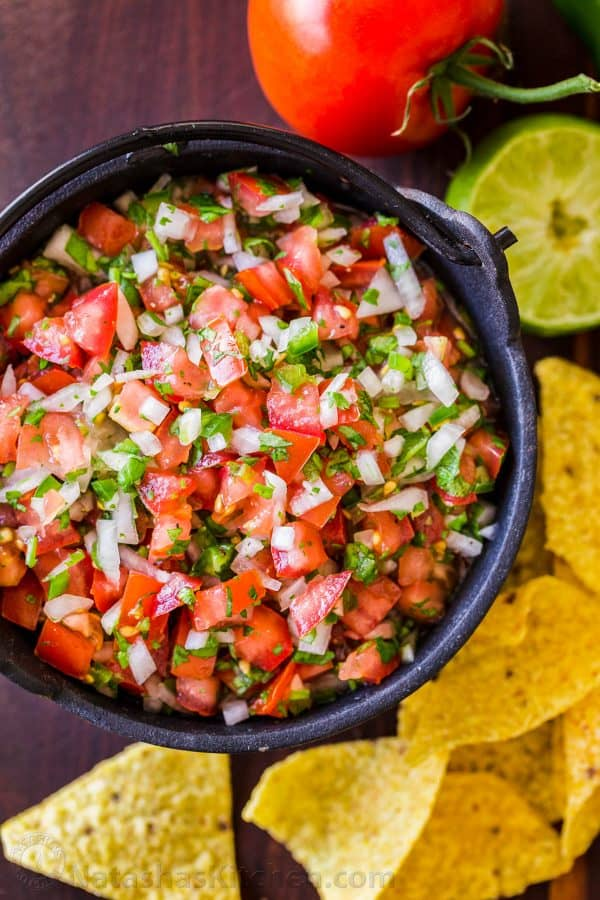

Pico de Gallo

Ingredients
- 1 lb tomatoes, (3-4 medium), diced
- 1/2 medium onion, (1 cup chopped)
- 1 jalapeno pepper, seeded and finely minced (optional)
- 1/2 cup cilantro, chopped
- 2 Tbsp lime juice, from 1 lime
- 1/2 tsp salt, or to taste
- 1/8 tsp black pepper, or to taste
To Prepare
- In ONE large bowl, add diced tomatoes.
- In a SECOND large bowl, add diced onion and chopped cilantro
- In a THIRD medium bowl, add diced jalapeno peppers (with veins for SPICY FLAVOR - if preferred)
- Stir in 2 Tbsp lime juice in to the FIRST bowl with the diced tomatoes and lightly season with 1/2 tsp salt, and/or pepper and season to taste.
- Seperate into halves and add jalapenos into ONE half.
- Enjoy right away or cover and refrigerate overnight.